GitHub Publishing Help Page
Before we begin, make sure to note that all commands must be typed exactly as shown.
- First, open Git Bash by rigth clicking inside of the folder and selecting Git Bash. You should get the following screen. 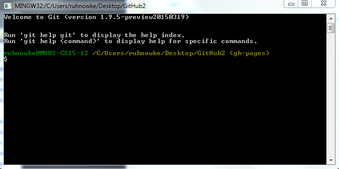
- Next use the command for initilizing your code. This is: git init
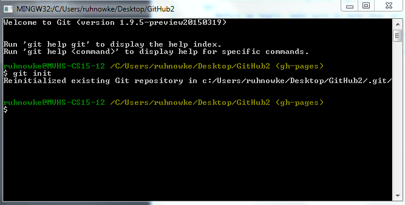
- Then you must tell the program where to look for the information. This is done by using the command: git checkout -b gh-pages.
- Now is a good time to check the status of your files. This can be done by simply typing: git status
- It is important to note a few things here:
- If you get the following screen, then all of your files are properly saved.
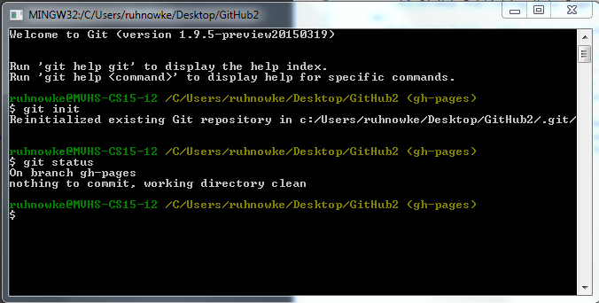
- If there are files that show up in red however, then these files will need to be commited. We will review this process in a moment 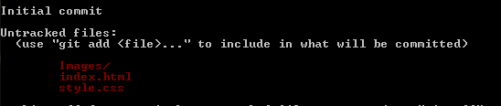
- Our next process is that of commiting.
- First, use the command: git add filename.
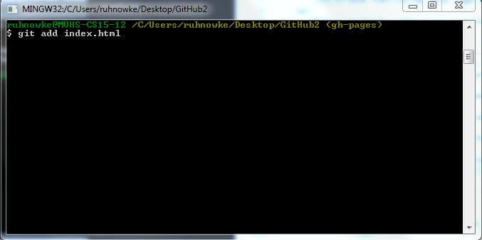
- Next, check the status of the file. It should be green now after using the command git status again. 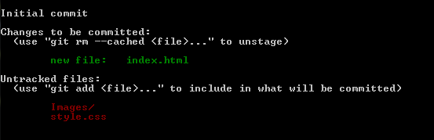
- Now to commit these changes, use the command: git commit-m "" and in the quotaions, write a brief statement about what you did for your own reference later. 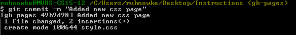
- Check your git status one mroe time and there should only be a short message in white text. 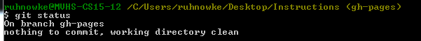
- We're now ready to set up a GitHub repository.
- Open Github.com and click the addition button in the top right in order to create a new repository.
- Name the repositroy the title of your website that you want to appear in the URL. Like so: 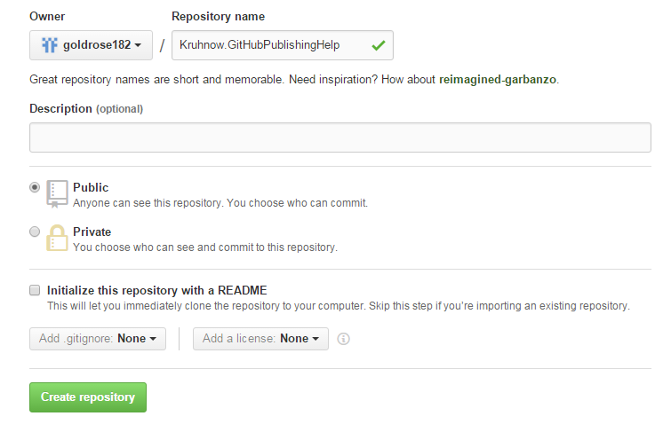
- You will get the following screen: 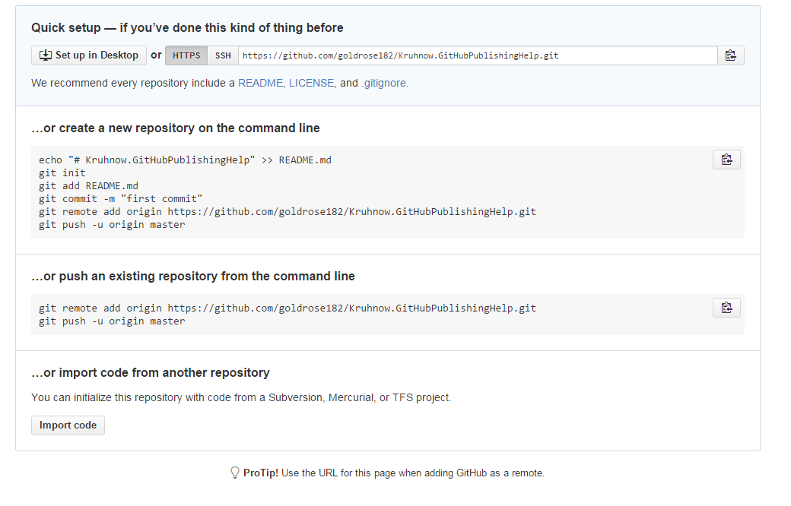
- Follow the instructions to push an existing repository.
- To do this we need to go back into Git Bash.
- use the command git push and you will add the origin of the page as follows. It will also ask for your Git Hub username and password. (Note that for security reasons, your password will nto be visible when typed 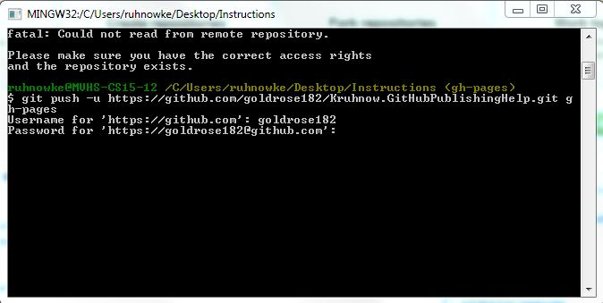
- This is the end of our session, and you have now sucessfully published your page! To see it, set up your link like this:
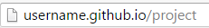
- Make sure to continue to commit and push any and all changes you make!